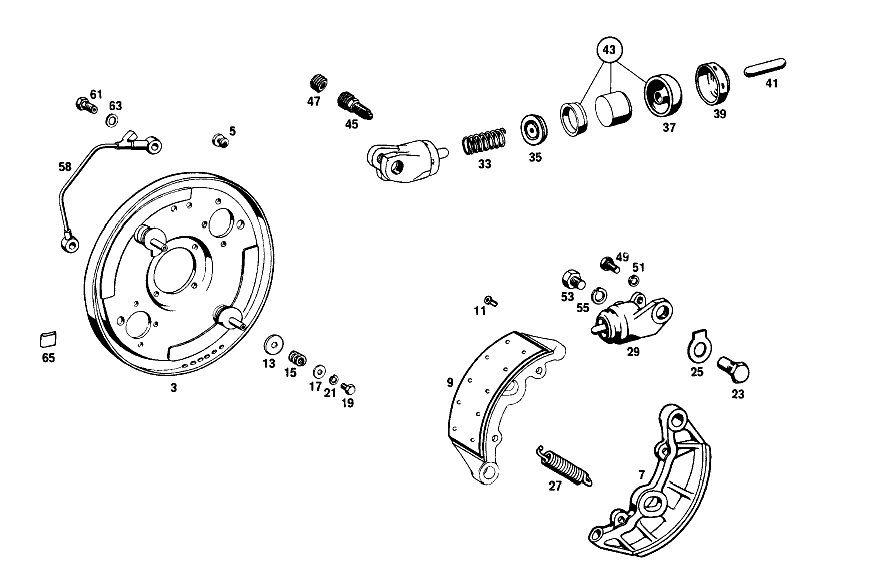

| № | Артикул | Название | Кол. | Примечание | Ограничение |
|---|---|---|---|---|---|
| 71 | A 001 421 81 98 | Тормозной суппорт | 1 | LEFT;TEVES;LESS LINING; IN PAIRS OPTIONAL с [007] 000,001,004,010,016 FROM CHASSIS 189499;002,003,005,011,017 FROM CHASSIS 033000;100,101,104,110,116 FROM CHASSIS 355414 | |
| 75 | A 000 421 33 83 | - ПОРШЕНЬ | 4 | [417] БОЛЬШЕ НЕ ПОСТАВЛЯЕТСЯ, ЗАКАЗЫВАТЬ КОМПЛЕКТ ПОСТАВКИ [010] USED FOR GIRLING THREE-PISTON BRAKE CALIPER | |
| 77 | A 000 420 17 55 | - Клапан выпуска воздуха | 2 | M 8 | |
| 79 | A 000 421 71 87 | - КОЛПАЧОК | - | ||
| 79 | A 000 421 08 87 | - Защитный колпачок | 2 | ||
| 81 | A 000 991 02 60 | - ШТИФТ | 4 | ||
| 83 | A 000 421 02 20 | - Щиток | 2 | [013] FOR TEVES CALIPER | |
| 87 | A 001 420 77 20 | К-т тормозных колодок | 1 | К\-Т ДЕТАЛЕЙ | |
| 87 | A 001 420 77 20 | К-т тормозных колодок | 1 | К\-Т ДЕТАЛЕЙ | |
| 87 | A 001 420 82 20 | К-т тормозных колодок | 1 | К\-Т ДЕТАЛЕЙ [010] USED FOR GIRLING THREE-PISTON BRAKE CALIPER | |
| 90 | A 000 586 64 42 | ремкомплект | 2 | [013] FOR TEVES CALIPER | |
| 93 | A 111 421 03 71 | болт | 4 | ||
| 95 | A 115 994 07 32 | Стопорная шайба | 2 | ||
| 97 | A 111 420 04 44 | ЗАЩИТНАЯ ПАНЕЛЬ | 1 | СЛЕВА [015] 000,001,010 FROM CHASSIS 089081;100,101,110 FROM CHASSIS 142522 | |
| 99 | N 000912 006024 | Цилиндрич. винт | 2 | ||
| 101 | N 007980 006000 | Пружинное кольцо | 4 | ||
| 103 | A 111 420 62 28 | ПРОВОД | 1 | СЛЕВА | |
| 105 | A 111 420 63 28 | ПРОВОД | 1 | СПРАВА | |
| 107 | N 000912 006024 | Цилиндрич. винт | 2 | ||
| 109 | N 007980 006000 | Пружинное кольцо | 4 | ||
| 113 | A 110 420 30 17 | ПЛАСТИНА ТОРМ. МЕХ-МА | 1 | СЛЕВА [018] 000,001,010 FROM CHASSIS 013484;100,101,110 FROM CHASSIS 018848 | |
| 115 | A 110 423 01 18 | БОЛТ КРЫШКИ ПОРДШИПНИКА | 2 | [018] 000,001,010 FROM CHASSIS 013484;100,101,110 FROM CHASSIS 018848 | |
| 123 | A 110 420 18 20 | ТОРМОЗН. КОЛОДКА | - | ||
| 123 | A 110 420 27 20 | ТОРМОЗН. КОЛОДКА | 2 | С НАКЛАДКОЙ [018] 000,001,010 FROM CHASSIS 013484;100,101,110 FROM CHASSIS 018848 | |
| 125 | A 110 420 17 20 | ТОРМОЗН. КОЛОДКА | - | ||
| 125 | A 110 420 26 20 | ТОРМОЗН. КОЛОДКА | 2 | С НАКЛАДКОЙ [018] 000,001,010 FROM CHASSIS 013484;100,101,110 FROM CHASSIS 018848 | |
| 133 | A 110 990 05 40 | ШАЙБА | 8 | ШТОК ПОРШНЯ НА ПЕДАЛИ ТОРМОЗА [018] 000,001,010 FROM CHASSIS 013484;100,101,110 FROM CHASSIS 018848 | |
| 135 | A 120 993 06 01 | ПРУЖИНА | 4 | ШТОК ПОРШНЯ НА ПЕДАЛИ ТОРМОЗА [018] 000,001,010 FROM CHASSIS 013484;100,101,110 FROM CHASSIS 018848 | |
| 137 | N 000433 008406 | Шайба | 4 | ШТОК ПОРШНЯ НА ПЕДАЛИ ТОРМОЗА [018] 000,001,010 FROM CHASSIS 013484;100,101,110 FROM CHASSIS 018848 | |
| 143 | A 110 993 12 10 | ПРУЖИНА | 2 | ВНИЗУ [018] 000,001,010 FROM CHASSIS 013484;100,101,110 FROM CHASSIS 018848 | |
| 147 | A 136 423 00 92 | ПРУЖИНА | 2 | [018] 000,001,010 FROM CHASSIS 013484;100,101,110 FROM CHASSIS 018848 | |
| 152 | A 002 420 49 18 | ЦИЛИНДР КОЛЁСНЫЙ | 2 | 19.05 MM [005] 000,001,010 FROM CHASSIS,ALSO INSTALLED ON,SEE FOOTN.2;100,101,110 FROM CHASSIS 099642,ALSO INSTALLED ON,SEE FOOTN.3,EXCEPT FOR 099892 [002] 051265, 053061, 053217, 053344, 060327, 060368, 060578, 064064, 061068, 061199, 061280, 061343, 061813, 061340, 062585, 062631, 062670, 063897, 063909, 063913, 063915, 063916, 063919, 063925, 063926, 063935, 063938, 063940, 063941, 063943, 063945, 063948, 063952, 063956, 063958, 063964- 063966, 063963, 063970, 063972- 064104. [003] 078058, 079716, 093183, 093267, 093378, 094037, 094473, 094521, 094662, 094949, 095648, 096887, 096973, 097051, 097114, 097172, 099489, 099503, 099508- 099510, 099516, 099521, 099523, 099535, 099537, 099538, 099547, 099553, 099556, 099560, 099562, 099569, 099571, 099576, 099578- 099581, 099583, 099586- 099588, 099590, 099592- 099594, 099596, 099597, 099599, 099600, 099602- 099604, 099607, 099608, 099611- 099616, 099619- 099624, 099627- 099631, 099633- 099636, 099638- 099640. | |
| 154 | A 000 421 15 87 | - КОЛПАЧОК | - | ||
| 154 | A 000 421 03 48 | - КОЛПАЧОК | 4 | ||
| 156 | A 000 431 02 65 | КЛАПАН | - | ||
| 156 | A 307 553 01 07 | Клапан | 2 | [402] БОЛЬШЕ НЕ ПОСТАВЛЯЕТСЯ | |
| 158 | A 000 421 71 87 | - КОЛПАЧОК | - | ||
| 158 | A 000 421 08 87 | - Защитный колпачок | 2 | ||
| 160 | A 000 586 12 42 | РЕМКОМПЛЕКТ | 2 | [005] 000,001,010 FROM CHASSIS,ALSO INSTALLED ON,SEE FOOTN.2;100,101,110 FROM CHASSIS 099642,ALSO INSTALLED ON,SEE FOOTN.3,EXCEPT FOR 099892 [002] 051265, 053061, 053217, 053344, 060327, 060368, 060578, 064064, 061068, 061199, 061280, 061343, 061813, 061340, 062585, 062631, 062670, 063897, 063909, 063913, 063915, 063916, 063919, 063925, 063926, 063935, 063938, 063940, 063941, 063943, 063945, 063948, 063952, 063956, 063958, 063964- 063966, 063963, 063970, 063972- 064104. [003] 078058, 079716, 093183, 093267, 093378, 094037, 094473, 094521, 094662, 094949, 095648, 096887, 096973, 097051, 097114, 097172, 099489, 099503, 099508- 099510, 099516, 099521, 099523, 099535, 099537, 099538, 099547, 099553, 099556, 099560, 099562, 099569, 099571, 099576, 099578- 099581, 099583, 099586- 099588, 099590, 099592- 099594, 099596, 099597, 099599, 099600, 099602- 099604, 099607, 099608, 099611- 099616, 099619- 099624, 099627- 099631, 099633- 099636, 099638- 099640. | |
| 164 | A 000 421 04 88 | ПАЛЕЦ НАЖИМНОЙ | 4 | [018] 000,001,010 FROM CHASSIS 013484;100,101,110 FROM CHASSIS 018848 | |
| 166 | N 000933 008130 | Винт | - | ||
| 166 | N 304017 008039 | Винт с 6-гранной головкой | 4 | ||
| 168 | N 000127 008203 | Пружинное кольцо | 4 | ||
| 172 | A 110 420 13 42 | РЫЧАГ ТОРМОЗА | 1 | СЛЕВА [018] 000,001,010 FROM CHASSIS 013484;100,101,110 FROM CHASSIS 018848 | |
| 180 | A 183 423 06 74 | БОЛТ | 2 | [018] 000,001,010 FROM CHASSIS 013484;100,101,110 FROM CHASSIS 018848 | |
| 182 | N 000125 008407 | ШАЙБА | 2 | [018] 000,001,010 FROM CHASSIS 013484;100,101,110 FROM CHASSIS 018848 | |
| 184 | A 001 997 34 46 | Уплотнительное кольцо | 2 | ||
| 186 | A 110 423 00 79 | уплотнение | 2 | ||
| 188 | A 001 997 47 46 | Уплотнительное кольцо | 2 | ||
| 190 | A 108 357 00 71 | Болт призонный | 12 | ||
| 192 | N 000127 008203 | Пружинное кольцо | 12 | ||
| 194 | N 000934 008010 | Гайка | - | ||
| 194 | N 304032 008006 | Шестигранная гайка | 12 | M8 | |
| 196 | A 111 990 08 40 | Диск | NB | 0.50 MM [018] 000,001,010 FROM CHASSIS 013484;100,101,110 FROM CHASSIS 018848 | |
| 198 | A 181 990 00 14 | БОЛТ | 2 | [018] 000,001,010 FROM CHASSIS 013484;100,101,110 FROM CHASSIS 018848 | |
| 200 | N 912004 012100 | Пружинное кольцо | 2 | [018] 000,001,010 FROM CHASSIS 013484;100,101,110 FROM CHASSIS 018848 | |
| 202 | A 110 993 04 01 | пружина | 2 | [018] 000,001,010 FROM CHASSIS 013484;100,101,110 FROM CHASSIS 018848 | |
| 204 | A 120 990 06 40 | ШАЙБА | 2 | [018] 000,001,010 FROM CHASSIS 013484;100,101,110 FROM CHASSIS 018848 | |
| 206 | A 120 423 01 56 | КОЛЬЦО | 2 | [018] 000,001,010 FROM CHASSIS 013484;100,101,110 FROM CHASSIS 018848 | |
| 208 | A 120 990 07 40 | ШАЙБА | 2 | [018] 000,001,010 FROM CHASSIS 013484;100,101,110 FROM CHASSIS 018848 | |
| 210 | N 000933 008131 | Винт | - | ||
| 210 | N 304017 008016 | Винт с 6-гранной головкой | 2 | M8X16 [018] 000,001,010 FROM CHASSIS 013484;100,101,110 FROM CHASSIS 018848 | |
| 212 | N 000127 008200 | КОЛЬЦО ПРУЖИННОЕ | 2 | [018] 000,001,010 FROM CHASSIS 013484;100,101,110 FROM CHASSIS 018848 | |
| 214 | A 110 420 07 90 | НАПРАВЛЯЮЩАЯ | 2 | ||
| 216 | A 094 990 68 10 | Пружинное кольцо | 4 | ||
| 218 | N 000934 006007 | Гайка | 4 | ||
| 220 | A 110 427 04 42 | ШКИВ ТРОСИКА | 2 | [022] 000,001,004,010,016 FROM CHASSIS 173830;002,003,005,011,017 FROM CHASSIS 023376;100,101,104,110,116 FROM CHASSIS 317270 | |
| 222 | A 110 427 02 53 | РАСПОРН. ТРУБКА | 2 | [022] 000,001,004,010,016 FROM CHASSIS 173830;002,003,005,011,017 FROM CHASSIS 023376;100,101,104,110,116 FROM CHASSIS 317270 | |
| 224 | A 187 427 00 52 | РАСПОРНАЯ ШАЙБА | 4 | [021] 000,001,004,010,016 UP TO CHASSIS 173829;002,003,005,011,017 UP TO CHASSIS 023375;100,101,104,110,116 UP TO CHASSIS 317269 | |
| 226 | A 110 427 00 74 | БОЛТ | 2 | ||
| 228 | A 110 994 01 01 | ПРЕДОХРАНИТЕЛЬ | 2 | ||
| 230 | N 000934 006007 | Гайка | 2 | ||
| 232 | A 111 420 00 79 | РЕМКОМПЛЕКТ | 2 | ||
| 481 | A 000 430 75 30 | УСИЛИТЕЛЬ ТОРМ. ПРИВОДА | 1 | T 51/100 Рулевое управление: Влево [033] 10/50;20/60;000,001,010 FROM CHASSIS 096158;10/50;20/60;100,101,110 FROM CHASSIS 156102 | |
| 481 | A 000 430 75 30 | УСИЛИТЕЛЬ ТОРМ. ПРИВОДА | 1 | T 51/100 Рулевое управление: Вправо [034] 000,001,010 FROM 096831;100,101,110 FROM CHASSIS 157498 | |
| 487 | A 000 430 36 81 | - Корпус | 1 | Рулевое управление: Влево [033] 10/50;20/60;000,001,010 FROM CHASSIS 096158;10/50;20/60;100,101,110 FROM CHASSIS 156102 | |
| 489 | A 000 431 29 87 | - КОЛПАЧОК | 1 | ||
| 491 | A 001 430 63 01 | ГЛАВНЫЙ ЦИЛИНДР | 1 | 23,81 MM Рулевое управление: Влево [038] 10/50;20/60;000,001,010 FROM CHASSIS 106922;10/50;20/60;100,101,110 FROM CHASSIS 178057 | |
| 491 | A 001 430 63 01 | ГЛАВНЫЙ ЦИЛИНДР | 1 | 23,81 MM Рулевое управление: Вправо [039] 000,001,010 FROM CHASSIS 107477;100,101,110 FROM CHASSIS 179100 | |
| 493 | A 000 431 07 22 | - РЕЗЬБОВАЯ ДЕТАЛЬ | 1 | ||
| 495 | N 007603 018100 | - Уплотнительное кольцо | 1 | ||
| 497 | A 000 430 24 81 | - КЛАПАН | 1 | ||
| 499 | A 000 431 55 93 | - ПРУЖИНА | 1 | [417] БОЛЬШЕ НЕ ПОСТАВЛЯЕТСЯ, ЗАКАЗЫВАТЬ КОМПЛЕКТ ПОСТАВКИ | |
| 511 | N 000472 028000 | - Стопорное кольцо | 1 | ||
| 513 | A 004 997 32 45 | - Уплотнительное кольцо | 1 | ||
| 515 | A 000 586 06 43 | РЕМКОМПЛЕКТ | 1 | Рулевое управление: Влево [038] 10/50;20/60;000,001,010 FROM CHASSIS 106922;10/50;20/60;100,101,110 FROM CHASSIS 178057 | |
| 515 | A 000 586 06 43 | РЕМКОМПЛЕКТ | 1 | Рулевое управление: Вправо [039] 000,001,010 FROM CHASSIS 107477;100,101,110 FROM CHASSIS 179100 | |
| 517 | N 000127 008200 | КОЛЬЦО ПРУЖИННОЕ | 2 | ||
| 519 | N 000934 008013 | Гайка | 2 | ||
| 521 | A 000 431 45 02 | Бак | 1 | ||
| 523 | A 000 431 43 34 | - Сетка | 1 | ||
| 525 | A 000 431 54 33 | - Запорная крышка | 1 | ||
| 527 | A 000 997 29 40 | - Уплотнительное кольцо | 1 | ||
| 530 | A 108 430 01 45 | ФЛАНЕЦ | 1 | Рулевое управление: Влево | |
| 532 | N 000835 008003 | - Винт | 1 | ||
| 534 | A 108 431 00 80 | ПРОКЛАДКА УПЛОТНИТЕЛЬНАЯ | 1 | Рулевое управление: Влево | |
| 536 | A 110 430 02 29 | ПРОВОД | 1 | Рулевое управление: Влево [041] 000,001,010 FROM CHASSIS | |
| 538 | N 915017 012200 | Гайка | 1 | ||
| 540 | A 000 431 36 07 | Клапан | 1 | Рулевое управление: Влево [042] 10/50,12/52;000,001,010 FROM CHASSIS 096158;10/50,12/52;100,101,104,110 FROM CHASSIS 156102-254608 | |
| 542 | A 111 435 02 27 | ОТРАЖАТЕЛЬ | 1 | [402] БОЛЬШЕ НЕ ПОСТАВЛЯЕТСЯ [044] 20,60/22,62;000,001,010 UP TO CHASSIS 130557 | |
| 544 | A 000 435 21 82 | Шланг | NB | [026] ЗАКАЗЫВАТЬ ПОГОННЫМИ МЕТРАМИ | |
| 550 | A 123 420 57 28 | Провод | 1 | FROM BRAKE MASTER CYLINDER TO LEFT FRONT WHEEL Рулевое управление: Влево [409] ПРИ МОНТАЖЕ ПОДОГНАТЬ ПО МЕСТУ [050] 000,001,010 FROM CHASSIS 106922;100,101,110 FROM CHASSIS 178057 | |
| 552 | A 123 420 68 28 | Провод | 1 | FROM BRAKE MASTER CYLINDER TO RIGHT FRONT WHEEL; 4.75 X 0.7 X 1290 MM Рулевое управление: Влево [409] ПРИ МОНТАЖЕ ПОДОГНАТЬ ПО МЕСТУ [050] 000,001,010 FROM CHASSIS 106922;100,101,110 FROM CHASSIS 178057 | |
| 556 | A 000 428 36 24 | РАСПРЕДЕЛИТЕЛЬ | 1 | СЗАДИ | |
| 558 | A 123 420 62 28 | Провод | 1 | [409] ПРИ МОНТАЖЕ ПОДОГНАТЬ ПО МЕСТУ | |
| 560 | A 123 428 05 35 | Тормозной шланг | 2 | ||
| 562 | A 000 428 06 73 | Удерживающая пружина | 2 | ||
| 564 | A 110 428 00 73 | Стопорная шайба | 2 | ||
| 566 | N 000933 006103 | Винт | - | ||
| 566 | N 304017 006018 | Винт с 6-гранной головкой | 2 | M6X12 | |
| 568 | N 000137 006204 | Пружинная шайба | 2 | ||
| 570 | A 000 990 22 91 | ГАЙКОДЕРЖАТЕЛЬ | - | ||
| 570 | A 001 990 67 91 | Гайкодержатель | 2 | С ГАЙКОЙ [415] ПРИМЕЧ. ПО ЗАМЕНЕ ПРИМЕНИМО ТОЛЬКО ДЛЯ СТОЯЩИХ РЯДОМ ПОЗИЦИЙ | |
| 572 | A 000 428 30 35 | ТОРМОЗНОЙ ШЛАНГ | 1 | СЛЕВА | |
| 574 | A 123 420 59 28 | Провод | 1 | TO LEFT REAR WHEEL [409] ПРИ МОНТАЖЕ ПОДОГНАТЬ ПО МЕСТУ | |
| 576 | A 000 428 31 35 | ТОРМОЗНОЙ ШЛАНГ | - | ||
| 576 | A 000 428 26 35 | Тормозной шланг | 1 | СПРАВА | |
| 578 | A 123 420 57 28 | Провод | 1 | TO RIGHT REAR WHEEL [409] ПРИ МОНТАЖЕ ПОДОГНАТЬ ПО МЕСТУ | |
| 580 | A 126 328 01 81 | Резиновая опора | 6 | 20 MM | |
| 582 | A 111 997 05 81 | резиновая втулка | 2 | ||
| 584 | A 000 988 33 78 | Скоба | 3 | ТОРМ.ТРУБОПР.НА РАМЕ Рулевое управление: Влево | |
| 584 | A 000 988 33 78 | Скоба | 1 | ТОРМ.ТРУБОПР.НА РАМЕ Рулевое управление: Вправо | |
| 586 | A 000 987 09 32 | Шланг | 4 | BRAKE LINE TO FRAME,25 MM Рулевое управление: Влево [026] ЗАКАЗЫВАТЬ ПОГОННЫМИ МЕТРАМИ | |
| 586 | A 000 987 09 32 | Шланг | 1 | ТОРМ.ТРУБОПР.НА РАМЕ Рулевое управление: Вправо [026] ЗАКАЗЫВАТЬ ПОГОННЫМИ МЕТРАМИ | |
| 588 | A 110 428 01 85 | Демпферная лента | 3 | ТОРМ.ТРУБОПР.НА РАМЕ Рулевое управление: Вправо | |
| 590 | A 201 428 00 40 | Держатель | 2 | ТОРМ.ТРУБОПР.НА РАМЕ Рулевое управление: Вправо | |
| 592 | A 108 420 01 88 | Тяга собачки | 1 | ||
| 594 | A 112 427 00 86 | Демпфирующее кольцо | 1 | ||
| 596 | A 110 420 04 77 | НАПРАВЛЯЮЩАЯ | 1 | [005] 000,001,010 FROM CHASSIS,ALSO INSTALLED ON,SEE FOOTN.2;100,101,110 FROM CHASSIS 099642,ALSO INSTALLED ON,SEE FOOTN.3,EXCEPT FOR 099892 [002] 051265, 053061, 053217, 053344, 060327, 060368, 060578, 064064, 061068, 061199, 061280, 061343, 061813, 061340, 062585, 062631, 062670, 063897, 063909, 063913, 063915, 063916, 063919, 063925, 063926, 063935, 063938, 063940, 063941, 063943, 063945, 063948, 063952, 063956, 063958, 063964- 063966, 063963, 063970, 063972- 064104. [003] 078058, 079716, 093183, 093267, 093378, 094037, 094473, 094521, 094662, 094949, 095648, 096887, 096973, 097051, 097114, 097172, 099489, 099503, 099508- 099510, 099516, 099521, 099523, 099535, 099537, 099538, 099547, 099553, 099556, 099560, 099562, 099569, 099571, 099576, 099578- 099581, 099583, 099586- 099588, 099590, 099592- 099594, 099596, 099597, 099599, 099600, 099602- 099604, 099607, 099608, 099611- 099616, 099619- 099624, 099627- 099631, 099633- 099636, 099638- 099640. | |
| 598 | A 112 420 04 77 | НАПРАВЛЯЮЩАЯ | 1 | Рулевое управление: Вправо | |
| 600 | A 120 427 01 15 | - Собачка | 1 | ||
| 602 | A 120 993 00 20 | - пружина | 1 | ||
| 604 | A 000 991 00 81 | - Заклепка | 1 | ||
| 606 | A 110 427 13 81 | КОРПУС | 1 | Рулевое управление: Вправо | |
| 608 | A 110 427 03 84 | ВКЛАДКА | 1 | CABLE PULLEY BEARING TO FIRE WALL Рулевое управление: Вправо | |
| 610 | A 121 427 00 59 | УПЛОТНИТЕЛЬНАЯ ШАЙБА | 1 | Рулевое управление: Вправо | |
| 612 | A 110 427 02 42 | ШКИВ ТРОСИКА | 1 | Рулевое управление: Вправо | |
| 614 | A 110 427 01 42 | ШКИВ ТРОСИКА | 1 | Рулевое управление: Вправо | |
| 616 | A 110 427 02 46 | ПЛАСТИНА НАПРАВЛЯЮЩАЯ | 1 | Рулевое управление: Вправо | |
| 618 | A 187 427 01 53 | РАСПОРН. ТРУБКА | 1 | Рулевое управление: Вправо [402] БОЛЬШЕ НЕ ПОСТАВЛЯЕТСЯ | |
| 620 | A 180 427 01 74 | Палец | 1 | Рулевое управление: Вправо | |
| 622 | A 110 427 01 53 | РАСПОРН. ТРУБКА | 1 | Рулевое управление: Вправо | |
| 624 | A 110 420 31 85 | ТРОС. ПРИВОД СТОЯН. ТОРМ. | 1 | Рулевое управление: Влево [005] 000,001,010 FROM CHASSIS,ALSO INSTALLED ON,SEE FOOTN.2;100,101,110 FROM CHASSIS 099642,ALSO INSTALLED ON,SEE FOOTN.3,EXCEPT FOR 099892 [002] 051265, 053061, 053217, 053344, 060327, 060368, 060578, 064064, 061068, 061199, 061280, 061343, 061813, 061340, 062585, 062631, 062670, 063897, 063909, 063913, 063915, 063916, 063919, 063925, 063926, 063935, 063938, 063940, 063941, 063943, 063945, 063948, 063952, 063956, 063958, 063964- 063966, 063963, 063970, 063972- 064104. [003] 078058, 079716, 093183, 093267, 093378, 094037, 094473, 094521, 094662, 094949, 095648, 096887, 096973, 097051, 097114, 097172, 099489, 099503, 099508- 099510, 099516, 099521, 099523, 099535, 099537, 099538, 099547, 099553, 099556, 099560, 099562, 099569, 099571, 099576, 099578- 099581, 099583, 099586- 099588, 099590, 099592- 099594, 099596, 099597, 099599, 099600, 099602- 099604, 099607, 099608, 099611- 099616, 099619- 099624, 099627- 099631, 099633- 099636, 099638- 099640. | |
| 626 | A 120 991 00 61 | Просечной штифт | 1 | ||
| 628 | A 110 427 00 96 | Манжета | 1 | GUIDE TO COWL Рулевое управление: Влево [005] 000,001,010 FROM CHASSIS,ALSO INSTALLED ON,SEE FOOTN.2;100,101,110 FROM CHASSIS 099642,ALSO INSTALLED ON,SEE FOOTN.3,EXCEPT FOR 099892 [002] 051265, 053061, 053217, 053344, 060327, 060368, 060578, 064064, 061068, 061199, 061280, 061343, 061813, 061340, 062585, 062631, 062670, 063897, 063909, 063913, 063915, 063916, 063919, 063925, 063926, 063935, 063938, 063940, 063941, 063943, 063945, 063948, 063952, 063956, 063958, 063964- 063966, 063963, 063970, 063972- 064104. [003] 078058, 079716, 093183, 093267, 093378, 094037, 094473, 094521, 094662, 094949, 095648, 096887, 096973, 097051, 097114, 097172, 099489, 099503, 099508- 099510, 099516, 099521, 099523, 099535, 099537, 099538, 099547, 099553, 099556, 099560, 099562, 099569, 099571, 099576, 099578- 099581, 099583, 099586- 099588, 099590, 099592- 099594, 099596, 099597, 099599, 099600, 099602- 099604, 099607, 099608, 099611- 099616, 099619- 099624, 099627- 099631, 099633- 099636, 099638- 099640. | |
| 634 | A 112 420 04 12 | РЫЧАГ ТОРМОЗА | 1 | ||
| 636 | A 110 427 00 50 | ВТУЛКА | 1 | ||
| 638 | A 110 427 07 12 | НАПРАВЛ. ЭЛЕМЕНТ | 1 | [059] 000,001,004,010,016 FROM CHASSIS 170295;100,101,104,110,116 FROM CHASSIS 308638 | |
| 640 | N 000961 010012 | Винт | 1 | [060] 000,001,010 FROM CHASSIS 003844;100,101,110 FROM CHASSIS 004761 | |
| 642 | N 912004 010102 | Пружинное кольцо | 1 | [060] 000,001,010 FROM CHASSIS 003844;100,101,110 FROM CHASSIS 004761 | |
| 646 | N 000961 010012 | Винт | 1 | [060] 000,001,010 FROM CHASSIS 003844;100,101,110 FROM CHASSIS 004761 | |
| 648 | N 912004 010102 | Пружинное кольцо | 1 | [060] 000,001,010 FROM CHASSIS 003844;100,101,110 FROM CHASSIS 004761 | |
| 650 | N 000125 010504 | ШАЙБА | 1 | ||
| 656 | A 110 420 34 85 | ТРОС. ПРИВОД СТОЯН. ТОРМ. | 1 | [065] 000,001,010,016 FROM CHASSIS 130558;100,101,110,116 FROM CHASSIS 225648 | |
| 658 | N 000094 003000 | ШПЛИНТ | 1 | ||
| 660 | A 112 420 00 90 | НАПРАВЛЯЮЩАЯ | 1 | Коробка передач | |
| 662 | A 111 427 02 40 | БОЛТ | 1 | Коробка передач | |
| 664 | A 094 990 68 10 | Пружинное кольцо | 2 | Автоматическая коробка переключения передач | |
| 666 | N 000934 006007 | Гайка | 2 | Автоматическая коробка переключения передач | |
| 668 | A 110 420 14 42 | Рычаг торм.механизма | 1 | [018] 000,001,010 FROM CHASSIS 013484;100,101,110 FROM CHASSIS 018848 | |
| 670 | A 108 420 06 73 | БОЛТ | 1 | ЗАКЛЮЧ.РЕГУЛ.ТОРМОЗ. [055] 000,001,010 FROM CHASSIS 130558;100,101,110 FROM CHASSIS 225648 | |
| 672 | A 110 427 01 13 | Рычаг | 1 | ||
| 674 | N 001434 008031 | БОЛТ | 1 | ||
| 676 | A 108 427 00 72 | гайка | 1 | ||
| 678 | N 001434 006034 | Палец | 1 | ||
| 680 | A 110 993 11 10 | пружина | 1 | ||
| 682 | A 110 427 09 41 | ДЕРЖАТЕЛЬ | 1 | ||
| 684 | A 110 420 23 85 | ТРОС. ПРИВОД СТОЯН. ТОРМ. | 1 | СЗАДИ СЛЕВА | |
| 686 | A 110 420 24 85 | ТРОС. ПРИВОД СТОЯН. ТОРМ. | 1 | СЗАДИ СПРАВА | |
| 688 | A 180 420 01 76 | КОНЦ. ЭЛЕМЕНТ | 2 | РЕМОНТ. ИСПОЛНЕНИЕ | |
| A 000 421 24 98 | СКОБА ТОРМОЗН. МЕХАНИЗМА | - | |||
| A 000 421 59 98 | СКОБА ТОРМОЗН. МЕХАНИЗМА | - | [005] 000,001,010 FROM CHASSIS,ALSO INSTALLED ON,SEE FOOTN.2;100,101,110 FROM CHASSIS 099642,ALSO INSTALLED ON,SEE FOOTN.3,EXCEPT FOR 099892 [002] 051265, 053061, 053217, 053344, 060327, 060368, 060578, 064064, 061068, 061199, 061280, 061343, 061813, 061340, 062585, 062631, 062670, 063897, 063909, 063913, 063915, 063916, 063919, 063925, 063926, 063935, 063938, 063940, 063941, 063943, 063945, 063948, 063952, 063956, 063958, 063964- 063966, 063963, 063970, 063972- 064104. [003] 078058, 079716, 093183, 093267, 093378, 094037, 094473, 094521, 094662, 094949, 095648, 096887, 096973, 097051, 097114, 097172, 099489, 099503, 099508- 099510, 099516, 099521, 099523, 099535, 099537, 099538, 099547, 099553, 099556, 099560, 099562, 099569, 099571, 099576, 099578- 099581, 099583, 099586- 099588, 099590, 099592- 099594, 099596, 099597, 099599, 099600, 099602- 099604, 099607, 099608, 099611- 099616, 099619- 099624, 099627- 099631, 099633- 099636, 099638- 099640. | ||
| A 000 421 71 98 | СКОБА ТОРМОЗН. МЕХАНИЗМА | - | |||
| A 001 421 00 98 | СКОБА ТОРМОЗН. МЕХАНИЗМА | - | |||
| A 000 421 64 98 | СКОБА ТОРМОЗН. МЕХАНИЗМА | - | [006] 000,001,004,010,016 UP TO CHASSIS 189498;002,003,005,011,017 UP TO CHASSIS 032999;100,101,104,110,116 UP TO CHASSIS 355413 | ||
| A 000 421 97 98 | СКОБА ТОРМОЗН. МЕХАНИЗМА | - | |||
| A 001 421 02 98 | СКОБА ТОРМОЗН. МЕХАНИЗМА | - | [007] 000,001,004,010,016 FROM CHASSIS 189499;002,003,005,011,017 FROM CHASSIS 033000;100,101,104,110,116 FROM CHASSIS 355414 | ||
| A 000 421 25 98 | СКОБА ТОРМОЗН. МЕХАНИЗМА | - | |||
| A 000 421 60 98 | СКОБА ТОРМОЗН. МЕХАНИЗМА | - | [005] 000,001,010 FROM CHASSIS,ALSO INSTALLED ON,SEE FOOTN.2;100,101,110 FROM CHASSIS 099642,ALSO INSTALLED ON,SEE FOOTN.3,EXCEPT FOR 099892 [002] 051265, 053061, 053217, 053344, 060327, 060368, 060578, 064064, 061068, 061199, 061280, 061343, 061813, 061340, 062585, 062631, 062670, 063897, 063909, 063913, 063915, 063916, 063919, 063925, 063926, 063935, 063938, 063940, 063941, 063943, 063945, 063948, 063952, 063956, 063958, 063964- 063966, 063963, 063970, 063972- 064104. [003] 078058, 079716, 093183, 093267, 093378, 094037, 094473, 094521, 094662, 094949, 095648, 096887, 096973, 097051, 097114, 097172, 099489, 099503, 099508- 099510, 099516, 099521, 099523, 099535, 099537, 099538, 099547, 099553, 099556, 099560, 099562, 099569, 099571, 099576, 099578- 099581, 099583, 099586- 099588, 099590, 099592- 099594, 099596, 099597, 099599, 099600, 099602- 099604, 099607, 099608, 099611- 099616, 099619- 099624, 099627- 099631, 099633- 099636, 099638- 099640. | ||
| A 000 421 72 98 | СКОБА ТОРМОЗН. МЕХАНИЗМА | - | |||
| A 001 421 01 98 | СКОБА ТОРМОЗН. МЕХАНИЗМА | - | |||
| A 000 421 65 98 | СКОБА ТОРМОЗН. МЕХАНИЗМА | - | [006] 000,001,004,010,016 UP TO CHASSIS 189498;002,003,005,011,017 UP TO CHASSIS 032999;100,101,104,110,116 UP TO CHASSIS 355413 | ||
| A 000 421 98 98 | СКОБА ТОРМОЗН. МЕХАНИЗМА | - | |||
| A 001 421 03 98 | СКОБА ТОРМОЗН. МЕХАНИЗМА | - | [007] 000,001,004,010,016 FROM CHASSIS 189499;002,003,005,011,017 FROM CHASSIS 033000;100,101,104,110,116 FROM CHASSIS 355414 | ||
| A 001 421 82 98 | Тормозной суппорт | 1 | RIGHT,TEVES,LESS LINING; IN PAIRS OPTIONAL с [007] 000,001,004,010,016 FROM CHASSIS 189499;002,003,005,011,017 FROM CHASSIS 033000;100,101,104,110,116 FROM CHASSIS 355414 | ||
| A 000 421 32 83 | - ПОРШЕНЬ | - | [008] 000,001,004,010,016 UP TO CHASSIS 153167;002,003,005,011,017 UP TO CHASSIS 012489;100,101,104,110,116 UP TO CHASSIS 268923 | ||
| A 000 421 35 83 | - Поршень | 4 | [009] 000,001,004,010,016 FROM CHASSIS 153168;002,003,005,011,017 FROM CHASSIS 012490;100,101,104,110,116 FROM CHASSIS 268924;FOR TEVES CALIPER | ||
| A 000 421 34 83 | - ПОРШЕНЬ | 2 | [010] USED FOR GIRLING THREE-PISTON BRAKE CALIPER | ||
| A 000 421 40 83 | - ПОРШЕНЬ | 4 | [011] USED FOR GIRLING TWO-PISTON BRAKE CALIPER | ||
| A 000 421 16 65 | - КЛАПАН ВЕНТИЛЯЦИИ | 2 | M 8 [010] USED FOR GIRLING THREE-PISTON BRAKE CALIPER | ||
| A 000 991 03 60 | - Фиксирующий штифт | 4 | [012] TO 000 421 59 98,000 421 60 98 | ||
| A 000 421 08 74 | - БОЛТ | 4 | [010] USED FOR GIRLING THREE-PISTON BRAKE CALIPER | ||
| A 000 421 05 73 | - предохранитель | 4 | [010] USED FOR GIRLING THREE-PISTON BRAKE CALIPER | ||
| A 000 421 00 20 | - ЗАЩИТНАЯ ПАНЕЛЬ | 2 | [010] USED FOR GIRLING THREE-PISTON BRAKE CALIPER | ||
| A 000 421 01 20 | - ЗАЩИТНАЯ ПАНЕЛЬ | 2 | [010] USED FOR GIRLING THREE-PISTON BRAKE CALIPER | ||
| A 000 421 03 20 | - ЗАЩИТНАЯ ПАНЕЛЬ | 4 | [011] USED FOR GIRLING TWO-PISTON BRAKE CALIPER | ||
| A 001 421 73 98 | СКОБА ТОРМОЗН. МЕХАНИЗМА | 1 | LEFT,BENDIX,LESS LINING; IN PAIRS OPTIONAL с | ||
| A 001 421 74 98 | СКОБА ТОРМОЗН. МЕХАНИЗМА | 1 | RIGHT,BENDIX,LESS LINING; IN PAIRS OPTIONAL с | ||
| A 000 421 44 83 | - Поршень | 4 | |||
| A 000 991 18 60 | - ШТИФТ | - | |||
| A 000 991 26 60 | - Фиксирующий штифт | 4 | |||
| A 000 421 12 91 | - Разжимная пружина | 4 | [417] БОЛЬШЕ НЕ ПОСТАВЛЯЕТСЯ, ЗАКАЗЫВАТЬ КОМПЛЕКТ ПОСТАВКИ | ||
| A 000 421 02 73 | - ПРЕДОХРАНИТЕЛЬ | - | |||
| A 000 421 05 73 | - предохранитель | 2 | |||
| A 000 421 03 73 | - ПРЕДОХРАНИТЕЛЬ | - | |||
| A 000 421 05 73 | - предохранитель | 2 | |||
| A 000 421 05 20 | - Щиток | 2 | |||
| A 000 420 46 55 | - Клапан выпуска воздуха | 2 | |||
| A 000 586 86 42 | РЕМКОМПЛЕКТ | 1 | [010] USED FOR GIRLING THREE-PISTON BRAKE CALIPER | ||
| A 000 586 24 43 | РЕМКОМПЛЕКТ | 2 | [011] USED FOR GIRLING TWO-PISTON BRAKE CALIPER | ||
| A 001 586 00 42 | набор уплотнений | 1 | "BENDIX" | ||
| A 111 420 05 44 | ЗАЩИТНАЯ ПАНЕЛЬ | 1 | СПРАВА [015] 000,001,010 FROM CHASSIS 089081;100,101,110 FROM CHASSIS 142522 | ||
| N 000912 006064 | Винт | 2 | |||
| A 110 420 31 17 | ПЛАСТИНА ТОРМ. МЕХ-МА | 1 | СПРАВА [018] 000,001,010 FROM CHASSIS 013484;100,101,110 FROM CHASSIS 018848 | ||
| N 000094 003000 | ШПЛИНТ | 4 | [018] 000,001,010 FROM CHASSIS 013484;100,101,110 FROM CHASSIS 018848 | ||
| A 110 420 12 42 | РЫЧАГ ТОРМОЗА | 1 | СПРАВА [018] 000,001,010 FROM CHASSIS 013484;100,101,110 FROM CHASSIS 018848 | ||
| N 000094 003000 | ШПЛИНТ | 2 | |||
| A 111 990 09 40 | Диск | NB | 1.00 MM [018] 000,001,010 FROM CHASSIS 013484;100,101,110 FROM CHASSIS 018848 | ||
| A 111 990 38 40 | ШАЙБА | NB | 1.50 MM [018] 000,001,010 FROM CHASSIS 013484;100,101,110 FROM CHASSIS 018848 | ||
| A 110 427 02 42 | ШКИВ ТРОСИКА | - | [021] 000,001,004,010,016 UP TO CHASSIS 173829;002,003,005,011,017 UP TO CHASSIS 023375;100,101,104,110,116 UP TO CHASSIS 317269 [415] ПРИМЕЧ. ПО ЗАМЕНЕ ПРИМЕНИМО ТОЛЬКО ДЛЯ СТОЯЩИХ РЯДОМ ПОЗИЦИЙ | ||
| A 187 427 01 53 | РАСПОРН. ТРУБКА | - | [021] 000,001,004,010,016 UP TO CHASSIS 173829;002,003,005,011,017 UP TO CHASSIS 023375;100,101,104,110,116 UP TO CHASSIS 317269 | ||
| A 001 586 41 43 | - ремкомплект | 1 | |||
| N 007603 006106 | - Уплотнительное кольцо | 1 | ДЛЯ РЕЗЬБОВОЙ ПРОБКИ | ||
| A 000 987 03 45 | - Пробка | 1 | |||
| N 900288 010001 | - Хомут | 1 | |||
| A 000 586 01 43 | ремкомплект | 1 | РАСШИРИТ. БАЧОК НА ГЛАВН. ЦИЛИНДРЕ | ||
| A 110 430 00 45 | ФЛАНЕЦ | - | Рулевое управление: Влево | ||
| A 110 430 01 45 | ФЛАНЕЦ | 1 | Рулевое управление: Вправо | ||
| N 000137 008200 | Пружинная шайба | 4 | |||
| N 000934 008010 | Гайка | - | |||
| N 304032 008006 | Шестигранная гайка | 4 | M8 | ||
| A 110 431 03 80 | ПРОКЛАДКА УПЛОТНИТЕЛЬНАЯ | 1 | Рулевое управление: Вправо | ||
| N 000933 008147 | Винт | - | |||
| N 304017 008021 | Винт с 6-гранной головкой | 1 | УСИЛИТЕЛЬ ТОРМОЗНОГО ПРИВОДА К МОТОРНОМУ ЩИТУ; M8X20 | ||
| N 000137 008200 | Пружинная шайба | 3 | УСИЛИТЕЛЬ ТОРМОЗНОГО ПРИВОДА К МОТОРНОМУ ЩИТУ | ||
| N 000934 008010 | Гайка | - | Рулевое управление: Влево | ||
| N 304032 008006 | Шестигранная гайка | 3 | УСИЛИТЕЛЬ ТОРМОЗНОГО ПРИВОДА К МОТОРНОМУ ЩИТУ; M8 Рулевое управление: Влево | ||
| N 304032 008006 | Шестигранная гайка | 2 | M8 Рулевое управление: Вправо | ||
| A 110 430 01 29 | ПРОВОД | 1 | Рулевое управление: Вправо | ||
| N 900262 005100 | Стяжка | 6 | |||
| N 900263 005003 | ЛЕНТА | NB | [026] ЗАКАЗЫВАТЬ ПОГОННЫМИ МЕТРАМИ | ||
| A 000 995 00 65 | ХОМУТ | 1 | Рулевое управление: Вправо | ||
| A 123 420 70 28 | Провод | 1 | FROM BRAKE MASTER CYLINDER TO LEFT FRONT WHEEL; 4.75X0.7X1495MM Рулевое управление: Вправо [409] ПРИ МОНТАЖЕ ПОДОГНАТЬ ПО МЕСТУ [051] 000,001,010 FROM CHASSIS 107477;100,101,110 FROM CHASSIS 179100 | ||
| A 123 420 60 28 | Провод | 1 | 580 MM Рулевое управление: Вправо [409] ПРИ МОНТАЖЕ ПОДОГНАТЬ ПО МЕСТУ [051] 000,001,010 FROM CHASSIS 107477;100,101,110 FROM CHASSIS 179100 | ||
| A 123 420 67 28 | Провод | 1 | FROM MASTER CYLINDER TO COUPLING Рулевое управление: Вправо [409] ПРИ МОНТАЖЕ ПОДОГНАТЬ ПО МЕСТУ [051] 000,001,010 FROM CHASSIS 107477;100,101,110 FROM CHASSIS 179100 | ||
| A 121 429 01 34 | 6-гр. распорный элемент | 1 | M10 Рулевое управление: Вправо | ||
| A 110 420 46 28 | ПРОВОД | - | Рулевое управление: Вправо | ||
| A 123 420 89 28 | Провод | 1 | 4.75 X 0.7 X 4000 MM Рулевое управление: Вправо [409] ПРИ МОНТАЖЕ ПОДОГНАТЬ ПО МЕСТУ [055] 000,001,010 FROM CHASSIS 130558;100,101,110 FROM CHASSIS 225648 | ||
| N 000933 008116 | Винт | - | M8X28\-8.8 | ||
| N 000933 008337 | Винт | - | |||
| A 009 990 01 01 | болт | 1 | |||
| N 000127 008203 | Пружинное кольцо | 1 | |||
| A 000 428 06 73 | Удерживающая пружина | 1 | |||
| A 000 428 06 73 | Удерживающая пружина | 2 | |||
| N 900262 009100 | Стяжка | 2 | BRAKE LINE TO AXLE TUBE | ||
| N 900263 009000 | Лента | 2 | BRAKE LINE TO AXLE TUBE | ||
| N 072571 001035 | Хомут | - | Рулевое управление: Влево | ||
| A 127 995 00 20 | хомут | 1 | ТОРМ.ТРУБОПР.НА РАМЕ Рулевое управление: Влево | ||
| N 007981 004245 | Шуруп | - | Рулевое управление: Влево | ||
| N 007981 004339 | Шуруп | - | Рулевое управление: Влево | ||
| N 000000 000459 | Шуруп | 1 | ТОРМ.ТРУБОПР.НА РАМЕ; MBN 10169 4.8 X 9.5 Рулевое управление: Влево | ||
| N 000000 000459 | Шуруп | 2 | ТОРМ.ТРУБОПР.НА РАМЕ; MBN 10169 4.8 X 9.5 Рулевое управление: Вправо | ||
| N 000137 005203 | Пружинная шайба | 2 | ТОРМ.ТРУБОПР.НА РАМЕ Рулевое управление: Вправо | ||
| N 000933 006130 | Винт | 3 | CABLE PULLEY BEARING TO FIRE WALL Рулевое управление: Вправо | ||
| N 000137 006204 | Пружинная шайба | 3 | CABLE PULLEY BEARING TO FIRE WALL Рулевое управление: Вправо | ||
| A 000 990 59 91 | ГАЙКОДЕРЖАТЕЛЬ | 1 | CABLE PULLEY BEARING TO FIRE WALL Рулевое управление: Вправо | ||
| A 000 990 27 91 | ГАЙКОДЕРЖАТЕЛЬ | - | Рулевое управление: Вправо | ||
| A 000 990 22 91 | ГАЙКОДЕРЖАТЕЛЬ | - | Рулевое управление: Вправо | ||
| A 001 990 67 91 | Гайкодержатель | 2 | CABLE PULLEY BEARING TO FIRE WALL Рулевое управление: Вправо [415] ПРИМЕЧ. ПО ЗАМЕНЕ ПРИМЕНИМО ТОЛЬКО ДЛЯ СТОЯЩИХ РЯДОМ ПОЗИЦИЙ | ||
| N 000137 008100 | Пружинная шайба | 1 | Рулевое управление: Вправо | ||
| N 000931 006016 | БОЛТ | 1 | Рулевое управление: Вправо | ||
| A 094 990 68 10 | Пружинное кольцо | 1 | Рулевое управление: Вправо | ||
| N 000934 006007 | Гайка | 1 | Рулевое управление: Вправо | ||
| A 110 420 26 85 | ТРОС. ПРИВОД СТОЯН. ТОРМ. | 1 | Рулевое управление: Вправо | ||
| N 000933 006183 | БОЛТ | - | |||
| N 304017 006016 | Винт с 6-гранной головкой | 2 | GUIDE TO COWL; M6X16 | ||
| A 094 990 68 10 | Пружинное кольцо | 2 | GUIDE TO COWL | ||
| N 000125 006407 | ШАЙБА | 2 | GUIDE TO COWL Рулевое управление: Влево | ||
| N 009021 006103 | Шайба | - | Рулевое управление: Вправо | ||
| N 009021 006208 | Шайба | 2 | GUIDE TO COWL; 6 MM Рулевое управление: Вправо | ||
| A 110 427 04 12 | НАПРАВЛ. ЭЛЕМЕНТ | 1 | [058] 000,001,004,010,016 FROM CHASSIS 059169-170294;100,101,104,110,116 FROM CHASSIS 090671-308637 | ||
| A 110 420 25 85 | ТРОС. ПРИВОД СТОЯН. ТОРМ. | 1 | [064] 000,001,010,016 UP TO CHASSIS 130557;100,101,110,116 UP TO CHASSIS 225647 | ||
| N 000094 002059 | Шплинт | 1 | 2X14 MM | ||
| N 000094 002059 | Шплинт | 1 | 2X14 MM | ||
| N 000094 001502 | ШПЛИНТ | 1 | |||
| N 000094 003005 | ШПЛИНТ | 1 | INTERMEDIATE LEVER TO TROUGH\-LINE GUIDE | ||
| N 000094 003004 | ШПЛИНТ | 1 | ФИКСАТОР ТОРМОЗНОГО ТРОСА | ||
| A 110 993 08 10 | ПРУЖИНА | 1 | [066] FOR UNDERSHIELD,ON SPECIAL REQUEST | ||
| N 000933 006102 | Винт | - | |||
| N 304017 006016 | Винт с 6-гранной головкой | 2 | RELEASE SPRING BRACKET TO TUNNEL; M6X16 | ||
| A 094 990 68 10 | Пружинное кольцо | 2 | RELEASE SPRING BRACKET TO TUNNEL | ||
| N 000934 006007 | Гайка | 2 | RELEASE SPRING BRACKET TO TUNNEL | ||
| N 000931 006027 | Винт | 2 | ТОРМ.ТРОС НА ДЕРЖАТ. | ||
| N 000137 006204 | Пружинная шайба | 2 | ТОРМ.ТРОС НА ДЕРЖАТ. | ||
| N 000934 006007 | Гайка | 2 | ТОРМ.ТРОС НА ДЕРЖАТ. |
Позиций: 295 · подписано на схемах: 170 · колесо — плавный зум в курсор, перетаскивание — пан, двойной клик — зум, клик по артикулу — скопировать · наведите на строку или цифру на схеме — подсветка связки, клик — закрепить.